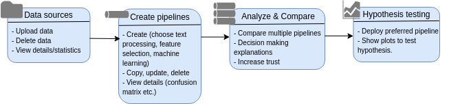

The eye of the beholder:
Transparent pipelines for assessing online information quality
eTEC 2020
Summary
- Platform of web information quality assessment
- Goal: to allow users to play with their datasets, test different algorithms, and understand the decisions of algorithms
- User group: digital humanity scholars with different knowledge level of coding and machine learning, general audience
- Duration: 2.5 years (Feb 2022 ~ Sep 2024)
Team
- Lead applicants: Davide Ceolin (CWI), Julia Noordegraaf (UvA).
- Postdoc: Dirk Meijer (CWI)
- RSEs: Dafne van Kuppevelt (LE), Ole Mussmann, Ji Qi
Data
- Corpus of web information: tweets, online articles, etc.
- Crowdsourced annotation: generated by crowd workers, assessed on different dimensions (correctness, comprehensibility, neutrality, etc.)
- Profile data of the crowd workers


Overview of NEWSGAC
- Features that should be improved or implemented from the beginning
- Crowdsourced data modeling
- View data details/statistics
- Track data provenance
- View details/explanation of pipelines
- Deploy preferred pipeline(s) on new datasets
- Build proper graphical interfaces for end users
- Add more models/algorithms if needed
- Connect to external platforms for data collection
Challenges/Questions
- Need to further define our target users, any tips?
- How generic should the tool be?
Thanks for watching!
Any questions?